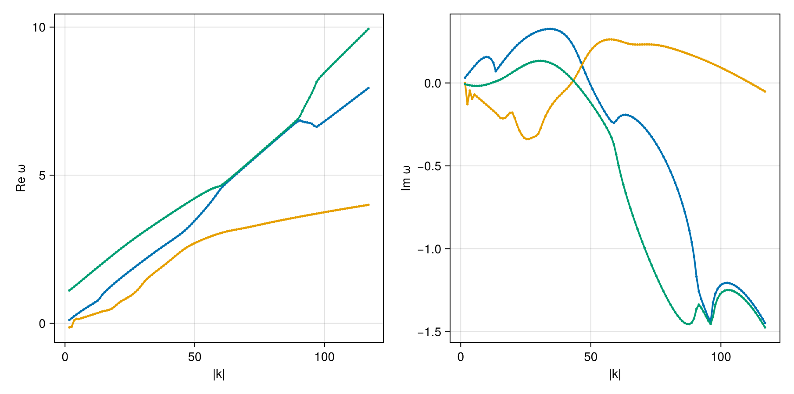

Oblique electron ring-beam instability
Oblique instability at θ = 40° driven by an electron ring-beam — a shifted Maxwellian with a parallel drift v_dz = 0.1c and a perpendicular ring speed v_dr = 0.05c — neutralised by a cold-ish Maxwellian electron core.
Reference: Guo (Case 3, arXiv:2606.14439)
using VlasovMaxwellDispersion
using VlasovMaxwellDispersion: isgrowing
using Unitful, Printf
using CairoMakiePlasma setup
GaussianRing is the literal shifted-Gaussian, f ∝ exp[-(v∥-v_dz)²/c∥² - (v⊥-v_dr)²/c⊥²], with c∥ = c⊥ = vth = √(2qT/m) from T and the drifts in c.
B0 = 9.6e-8u"T"
plasma = Plasma(
Species(Electron(), sc -> GaussianRing(sc; vd=0.1, vr=0.05); n=1.0e5u"m^-3", T=51u"eV"),
Species(Electron(); n=9.0e5u"m^-3", T=51u"eV");
B0,
)Plasma{Tuple{Species{Particle{Float64, Float64}, Float64, Main.var"#2#3", @NamedTuple{T::Unitful.Quantity{Int64, 𝐋^2 𝐌 𝐓^-2, Unitful.FreeUnits{(eV,), 𝐋^2 𝐌 𝐓^-2, nothing}}}}, Species{Particle{Float64, Float64}, Float64, Nothing, @NamedTuple{T::Unitful.Quantity{Int64, 𝐋^2 𝐌 𝐓^-2, Unitful.FreeUnits{(eV,), 𝐋^2 𝐌 𝐓^-2, nothing}}}}}, Float64, Particle{Float64, Float64}}((Species{Particle{Float64, Float64}, Float64, Main.var"#2#3", @NamedTuple{T::Unitful.Quantity{Int64, 𝐋^2 𝐌 𝐓^-2, Unitful.FreeUnits{(eV,), 𝐋^2 𝐌 𝐓^-2, nothing}}}}(Particle{Float64, Float64}(-1.602176634e-19, 9.1093837015e-31), 100000.0, Main.var"#2#3"(), (T = 51 eV,)), Species{Particle{Float64, Float64}, Float64, Nothing, @NamedTuple{T::Unitful.Quantity{Int64, 𝐋^2 𝐌 𝐓^-2, Unitful.FreeUnits{(eV,), 𝐋^2 𝐌 𝐓^-2, nothing}}}}(Particle{Float64, Float64}(-1.602176634e-19, 9.1093837015e-31), 900000.0, nothing, (T = 51 eV,))), 9.6e-8, Particle{Float64, Float64}(-1.602176634e-19, 9.1093837015e-31))Seedless survey
de = 1 / plasma_gyro_ratio(1.0e6u"m^-3", mass(Electron()), B0)
ks = range(0.5, 35.0, 128) ./ de
region = (-1.0 - 1.5im, 10.0 + 0.6im)
geom = AngleSweep(k=ks, theta=deg2rad(40))
sol = solve(DispersionProblem(plasma, region, geom))SurveySolution(retcode=Saturated, 408 roots, 106412 evals, 12.0 s)The survey resolves three growing branches. Here we compare their peak growth rates and the wavenumbers of those peaks.
kde(b) = [sqrt(abs2(k)) * de for k in b.k] # |k| in units of d_e⁻¹
growing = filter(x -> isgrowing(x, 0.05), sol)
for b in growing
x = kde(b);
g = imag.(b.omega);
j = argmax(replace(g, NaN => -Inf))
@printf("γ_peak = %.3f at k·d_e = %.1f\n", g[j], x[j])
endγ_peak = 0.326 at k·d_e = 10.3
γ_peak = 0.263 at k·d_e = 17.1
γ_peak = 0.133 at k·d_e = 9.2Dispersion diagram
dispersion_diagram(growing)
This page was generated using Literate.jl.